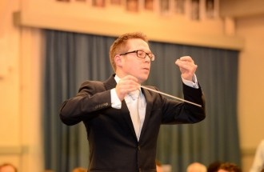

Quadrivium |
|||||||||||
|
|||||||||||
Organisatie |
|||||||||||
|
|||||||||||
Activiteiten |
|||||||||||
|
|||||||||||
voor Leden |
|||||||||||
|
|||||||||||
Contact |
|||||||||||
|
|||||||||||
Ensuite
Quadrivium
Symfonieorkest Ensuite is een enthousiast studentenorkest met een breed repertoire aan muziek: zowel klassieke als moderne werken, film- en popmuziek komen aan bod. Soms ook in samenwerking met andere onderverenigingen van ESMG Quadrivium. Naast het zo goed mogelijk uitvoeren van muziek staat gezelligheid natuurlijk voorop.
Het Symfonieorkest Ensuite is voortgekomen uit het strijkersensemble “Ma Non Troppo” en is in de zomer van 2002 opgericht als ondervereniging van ESMG Quadrivium. Momenteel telt Ensuite ongeveer 30 leden. In 2015-2016 staan er weer veel gave projecten op het programma, dus kom vooral een keertje langs!
Vanwege onze ambitie om een ‘volwaardig’ symfonieorkest te worden zijn we altijd op zoek naar nieuwe leden!
Momenteel zoekt het orkest in het bijzonder versterking in de strijkers, fagot en hoorns. Extra slagwerkers zijn ook zeer welkom. Je bent van harte welkom, dus kom gerust een keer kijken!

DIRIGENT

Sinds november 2014 is Bart Partouns dirigent bij Ensuite. Bart begon zijn muzikale loopbaan op 9-jarige leeftijd als hoboïst bij de Koninklijke Oude Harmonie van Eijsden. Na de middelbare school werd hij toegelaten tot het Conservatorium te Maastricht en studeerde hobo bij Peter Steijvers. In juni 2004 sloot hij zijn Bacheloropleiding met succes af en werd toegelaten tot de Masteropleiding die hij in juni 2006 afsloot.
Tijdens zijn studie hobo startte hij tevens de hoofdvakken Orkestdirectie bij JanStulen en HaFa-directie bij Pierre Kuijpers. HaFa-directie sloot hij in april 2009 met groot succes af. Momenteel volgt Bart privélessen orkestdirectie bij Theo Wolters en Master HaFa-directie bij Jan Cober. Ook volgde hij Masterclasses bij, Eugene Corporon en in juni 2014 op uitnodiging van Jac van Steen i.s.m. Residentie Orkest te Den Haag.
Tijdens de finale van de Internationale Dirigentenwedstrijd 2013 van het WMC te Kerkrade behaalde hij de Bronzen dirigeerstok (3e plaats) dit met de medewerking van de Marinierskapel der Koninklijke Marine
In de zomer van 2014 heeft Bart het Zomer Orkest Nederland gedirigeerd tijdens hun jaarlijkse zomertournee.
Tevens is Bart als docent hobo werkzaam bij Rick (Regionaal Instituut Cultuur- enKunsteducatie) Weert en Harmonie Concordia Melick.
Verder is Bart als 1e hoboïst verbonden aan kamermuziekensemble Helicon en werkzaam als remplacant bij verschillende orkesten in binnen- en buitenland
Naast Ensuite dirigeert Bart Partouns op dit moment voor meerdere orkesten, waaronder Fanfare St. Hubertus Hegelsom, Harmonie St. Catharina Leunen en Fanfare “Moed en Ijver” Blitterswijck.
Visie:
De visie van Bart is om een nog breder publiek te bereiken d.m.v. muzikale projecten aan te gaan die uit het oog springen zonder daarbij het gevestigde repertoire te vergeten.
Repertoire
Ensuite heeft de afgelopen jaren verschillende concerten gegeven.
In 2010 werd het concert 'Dancing on the G-string’ gegeven, een project waarin dans en muziek werden gecombineerd in een gevarieerde voorstelling. In 2011 begeleidde Ensuite i.s.m. bigband Studentproof de musical Moulin Rouge in het parktheater. Tijdens de serie ‘Casual Classics’ in 2012 voerde Ensuite een programma op met filmmuziek samen met dansers en figuranten.
Tijdens de herfst van 2013 begeleidde Ensuite een hoornsolist in een hoornconcerto van Strauss. Daarnaast werden er tijdens de 2 concerten werken van Mozart en Elgar gespeeld, dit zorgde voor een klein maar succesvol concert.
2014 was een hoogtepunt voor Ensuite, waarbij een concert gegeven werd tijdens Glow met de zogenoemde Wave Field Synthesis. Dit is de eerste geluidsweergavetechniek waarmee geluid daadwerkelijk – dat wil zeggen natuurkundig in plaats van psycho-akoestisch – ruimtelijk wordt verspreid. Daarnaast stonden er tijdens dit lustrumjaar verschillende nieuwe stukken op het programma die zowel licht-klassiek als pop zijn. Op 5 maart 2015 werden deze ten gehore gebracht tijdens het lustrumconcert in de Effenaar Eindhoven i.s.m. Studium Generale en popartiesten Wouter Hamel, Wudstik en Eefje de Visser. In najaar 2015 heeft Ensuite in samenwerking met studentenkoor Vokollage het "Stabat Mater" van Karl Jenkins uitgevoerd in de Catharinakerk, wat een prachtig en zeer geslaagd project was.
In 2016 zal Ensuite op het TU-lustrum spelen. Hier gaan ze een selectie van videogame-muziek spelen.
BEZETTING
Ensuite is een orkest dat de ambitie heeft om uit te groeien tot een volledig symfonieorkest. Het orkest bestaat uit zowel strijkers, blazers als slagwerkers. Natuurlijk kan de bezetting licht variëren per werk dat op het repertoire staat, en indien nodig zal het orkest aangevuld worden met gastspelers. De huidige bezetting bestaat voornamelijk uit studenten, aangevuld met enkele scholieren en oud-studenten.
REPETITIES
Ensuite repeteert wekelijks op woensdagavond van 19.30 tot ongeveer 22.15 uur. De repetities vinden (met enkele uitzonderingen) plaats in de grote muziekzaal in de Bunker. Je bent van harte welkom, bij het gezelligste studentensymfonieorkest van de regio.
Heb je nog vragen of wil je graag meespelen? Stuur dan een mail naar of kom een keer langs in de Bunker Eindhoven op woensdag om 19:15 uur.
AGENDA
| Zaterdag 23 April | TU-lustrum (Videogame-muziek) |